The previous section was concerned solely with mechanical weapons that launched projectiles by transferring energy from a spring potential or gravitational potential to kinetic energy in the projectile. It is possible to find other forms of potential energy to release, in order to effect motion. Chemical potential energy is the energy stored in the bonds of molecules that can be released through chemical reactions. One such mixture of molecules that releases large amounts of energy is gunpowder.
As early as the 8th century Chinese alchemists discovered an early form of gunpowder quite by chance, during their search for the elixir of life. Their inventory of ingredients contained a plethora of substances including two key components of gunpowder: sulphur and saltpetre (potassium nitrate as it would be known to modern scientists). Whilst conducting some experiments they chanced on the fact that a certain mixture of sulphur and saltpetre would combust quite spectacularly when subjected to heat. Eventually, through much experimentation, the final key ingredient, charcoal (or carbon), was added to the mixture, thus completing the creation of gunpowder, though the proportions were to be adjusted throughout history.
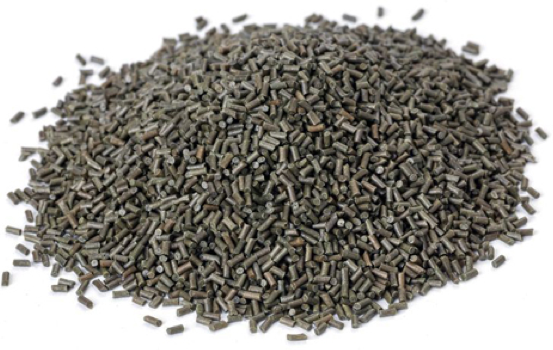Fig 1: Modern day gunpowder.
Through modern methods, scientists have been able to obtain the ideal proportions for the three vital ingredients, with the right amount of moisture for the ideal burning time; 75.7% potassium nitrate, 11.7% charcoal, 9.7% sulphur and 2.9% water. This leads to the chemical equation:
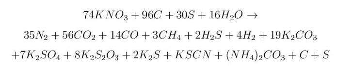This reaction releases 3.0 megajoules per kilogram of reactant. Obviously, this is quite a complicated reaction in terms of the chemical processes, however there are two key ideas to investigate. Firstly, that this is an exothermic reaction; It is a reaction that releases energy to its surroundings, and that some of these compounds form gases.
The Chinese soon realised that the energy released by this mixture could be harnessed for military technology. They developed weapons such as fire-lances, which were tubes filled with gunpowder that would act as flame throwers once the gunpowder was ignited. Eventually shrapnel was used in tandem for extra effect and then cannonballs were introduced. The oldest surviving gun dates back to 1288, but the first documented use of gunpowder artillery on the battlefield was on 28th January 1132.
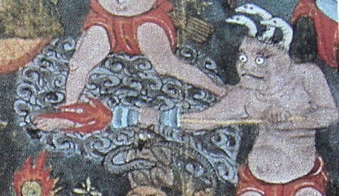Fig 2: A mosaic depicting the use of a fire-lance.
In 1260 cannon were used against the Mongols by the Mamluks in the battle of Ain Jalut. This is claimed to have been the first use of gunpowder with proportions almost the exactly same as those for the ‘ideal’ reaction.
The first skilled use of gunpowder in Northern Europe came from the Franciscan monk Roger Bacon. He was well educated in many fields at Oxford University and spent time in Paris gaining a doctorate. His key addition to the history of gunpowder was the purification of potassium nitrate. After some time, he decided that the best weighting to have would be 37.5% saltpetre, 31.25% sulphur and 31.25% charcoal. This postulation led to 10 years of imprisonment after the church discovered what their monks were getting up to!
The first metal cannon seen in medieval Europe was the pot-de-fer. It fired an arrow-like bolt and was set off through a touch hole with a heated wire. It was used by both the French and the English during the Hundred Years’ War. Further advancements were made by the both the Byzantine and Ottoman Empire.
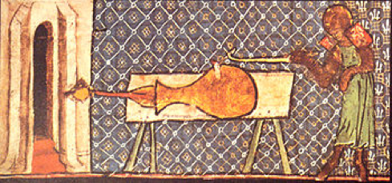Fig 3: A pot-de-fer.
By this time cannon had both use as a siege engine and as field artillery. In order to defend from cannon the design of fortifications changed drastically from the high towers and ramparts of castle to the sloped walls of star forts. These changes signalled the redundancy of earlier siege engines such as trebuchets.
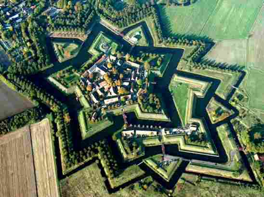Fig 4: Bourtange fortification, Netherlands.
By the mid-sixteenth century the variety of cannon in use was so great that European monarchs began to classify them for clarity. Wheeled gun carriages had become commonplace allowing for more mobility on the battlefield. Tactics changed, favouring the use of larger amounts of smaller calibre cannon that could fire more rapidly.
In the nineteenth century, military leaders placed greater importance on the long-range accuracy of cannon. This can be seen in the cannon used in the American Civil War. The American 3 howitzer had a range of over 1.8km and the 12 pounder Napoleon had a range of over 1.5km. Cannon were integral in Napoleon’s rise to power and dominance on the battlefield.
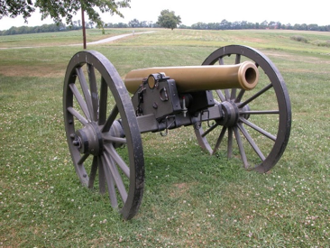Fig 5: A modern day reconstruction of a Napoleon 12 pounder.
In the modern day world cannon are still used by the military, though the projectiles launched and the substances reacted to provide the energy required are very different to the gunpowder and cannonball used in the days of Napoleon. One such cannon is the M198 howitzer used by the US military, which is favoured as it is easily towed and inexpensive to run.
A cannonball is fired from a cannon by making use of a pressure difference across the cannonball created by the energy released in the reaction of gunpowder. A cannon is essentially a tube with one open end containing some gunpowder situated between the closed end of the tube and a cannonball:
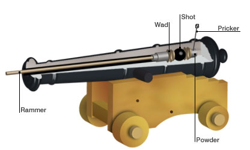Fig 6: An example of a cannon prior to ignition.
The first part of the process to investigate is to see how the energy is released from the gunpowder. It is an exothermic reaction, meaning that the net result of the reaction is a release of energy, however energy is required to start the reaction. This is a result of potential barriers, as illustrated in the figure below:
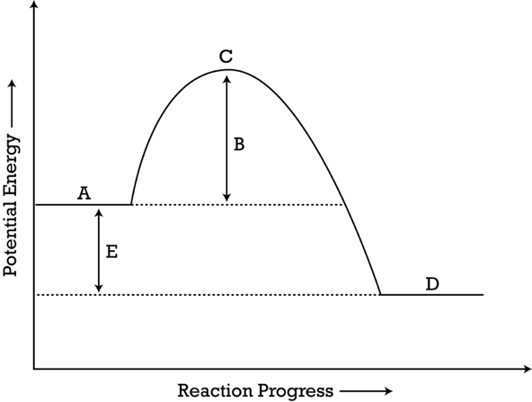Fig 7: The varying of the potential energy in molecular bonds as an exothermic reaction takes place.
A represents the ground state energy stored in the bonds of the molecules in the gunpowder and D is the equivalent stored in the bonds in the products of the reaction. Thus, the difference between the two, E , is the energy released in the reaction. The keen eyed amongst you would have spotted a small obstacle in the way at C. This is known as a potential barrier. In order to get from A to D, enough energy must be provided to the bonds of the molecules to overcome this barrier, at which point the molecules in the gunpowder break apart and form new molecules releasing energy B + E. Note that the energy B has been put into the bonds to begin the reaction, so the net result is the release of energy E. The energy that is needed to begin the reaction is called the activation energy.
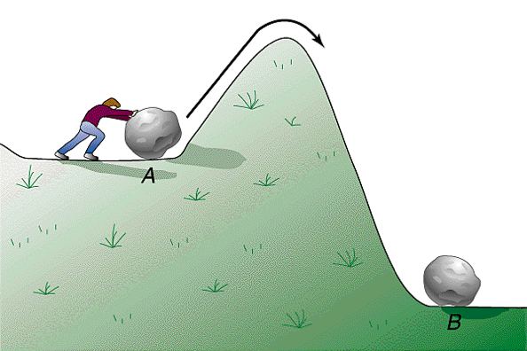Fig 8: The mechanical analogy of a potential barrier.
One way in which to envisage this concept is to imagine rolling a boulder over a hill into a lower valley. Energy must be provided to the boulder to get it over the hill, but once it is over it tumbles faster and with more energy than it was imparted with. This example can also be represented with a potential graph with a potential barrier.
The next step in analysing the physical processes of cannon is to find out how the chemical potential energy is transferred to the cannonball.
For simplicity, we will assume that none of the energy released from the reaction is transferred to the surroundings in the form of heat (since the process takes place so quickly) or resistive work whilst the cannonball is inside the barrel of the cannon.
The products of the gunpowder ignition form both solids and gases. We will assume that these gases form an ideal gas, that is, a gas described by the following law:
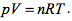In the above, p represents pressure, V volume, n the number of moles of the gas, R is the gas constant and T is the temperature of the gas as measured in Kelvin. (This model is being used to demonstrate some of the underlying physics that governs this weapon. It does not consider the whole picture, so is not applicable to real world systems.)
As the reaction is so quick that no heat is lost to the surroundings, it is an example of an adiabatic process. For this type of process the quantity pVγ is conserved. That is:
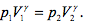Here the gamma is the ratio of specific heats. The specific heats of the gas when held at a constant pressure and at a constant volume. This formula will be useful when calculating the pressure at a later point in time after the initial reaction.

There are four basic assumptions to the model:
These collisions with the walls result in the macroscopic property of pressure. In a collision only the perpendicular component of the momentum to the wall changes, where it is reversed. Assume a particle travels with the average speed vx along the x direction. Each collision will lead to a change in velocity from -vx to vx or vice versa. Thus, the total change in momentum would be ±2mvx. Now consider an area on the wall, A. If a molecule were to collide with the wall within A during a short time interval dt, then it would need to be within a cylinder of length vxdt from the wall. The number of molecules that collide in A during dt is equal to the number of molecules within the cylinder moving towards the wall. On average, half of the molecules are moving towards the wall and half away. The volume of the cylinder is Avxdt and the number of molecules per unit volume N/V, which is taken to be uniform throughout the container. Thus, we can write an expression for the number of collisions within this interval:
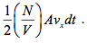The total momentum change is simply the number of collisions multiplied by the change in momentum per collision:
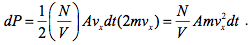Using Newton's 2nd Law, one can obtain an expression for pressure:
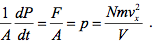Up until now, only the x direction has been considered. Using Pythagoras' theorem, it can be shown that:
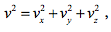where v is the total speed in all three directions. However, no direction has any preference, so it can be assumed that the average speed in one direction is the same in all directions, so vx=vy=vz. This implies that vx2=⅓v2. Combining this with the equation for pressure one finds:
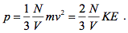Here, KE represents the average kinetic energy of the molecules. If none of the energy released from the reaction is transferred to heat or resistive work, then it must all be transferred into kinetic energy, thus KE is equal to the energy released by the reaction.
Taking the formula above, combining it with the formula for the work done by a gas and the formula for an adiabatic process, it is possible to calculate how much energy is transferred to the cannonball and the cannon, E, from the reaction:
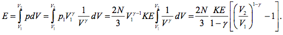V1 describes the volume between the cannonball and the back wall of the barrel, whereas V2 describes the volume of the barrel in totality.
These volumes are dependent on the length of the barrel of the cannon and the radius of the barrel. Inspecting Fig 3 below, it is obvious that V1 is equivalent to the volume of the charge behind the cannonball and the space between the charge and the cannonball due to the curvature of the ball. V2 is the volume of the barrel, but with half the volume of the cannonball removed as this is the last moment, before the cannonball leaves the barrel. Thus the above equation can be written as the end result in the main text, where r denotes the radius of the barrel, L the length and Wg the width of the charge.
In order to find how the energy released by the reaction is transferred to the ideal gas, it is necessary to look at the kinetic-molecular model.
The end result is the following formula:
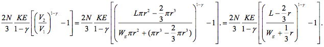Fig 9: The volumes and lengths before the reaction and after the cannonball has left the barrel.
Given the pressure and therefore force applied to the cannonball it is possible to describe the speed of the cannonball leaving the barrel.
Newton’s 2nd Law describes the relationship between force and acceleration. Once the acceleration is known it is then possible to describe the subesequent motion of the cannonball. The law states that:
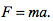Here, F is the force applied, m the mass of the object the force is applied to and a the acceleration. All the physics to find the force has been done above as it simply the product of the pressure behind the cannonball and the surface area that it is exposed to. This gives the following result:
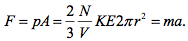In expressing the force in this way, the air resistance inside the barrel has been neglected.
Since the acceleration is the second derivative of position and volume is a function of position, this equation can be written as (ignoring the effects of air resistance within the barrel).
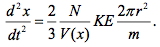Now all that remains to be done in setting up the problem is to find the volume as a function of position. Take x to be the point on the ball closest to the back wall. (See Fig 10)
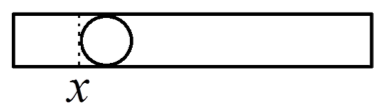Fig 10: Setting the x coordinate to the back of the cannonball.
The volume is now rather simple to describe. It is just a cylinder with cross sectional area πr2 and height x plus the space between the point demarcated by the x coordinate and the cannonball, which has already been calculated. Thus:
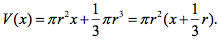Plugging this into the equation for the acceleration results in a second order nonlinear differential equation in x:
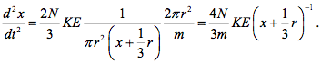Analytically this equation is solvable for both velocity and position, however it is rather complicated to perform, so it will be solved numerically. As stated previously, this model is not accurate in describing the firing of cannon in the real world as too many assumptions have been made for simplicity so that the physical concepts governing the system can be explained with more ease. Thus it is more useful to just show the shape of the solution to the above equation:
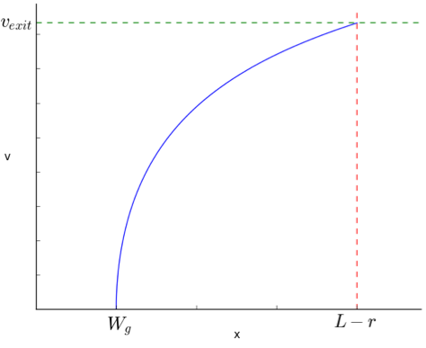Fig 11: The velocity of a cannonball in a barrel as a function of position.
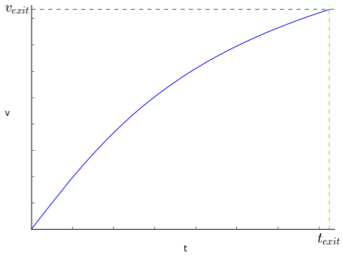Fig 12: The velocity of a cannonball as a function of time after the reaction.
Note that even in the absence of air resistance there is a maximum velocity that the cannonball tends to as the length of the barrel tends to infinity.
This is more explicit from the equation of acceleration, where the acceleration is inversely proportional to the volume. As the length of the barrel tends to infinity the volume tends to infinity and thus the acceleration tends to zero.
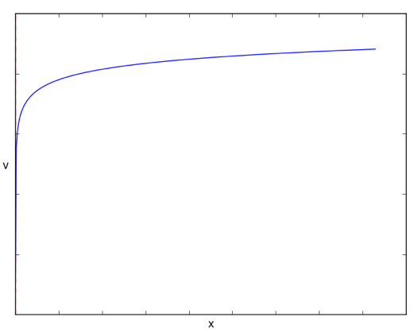Fig 13: The speed of the projectile as a function of the distance along the barrel for large barrel length.
The differences between the model's assumptions and a real cannon are as follows:
Cannon were used throughout the American war of independence. During this conflict one such cannon was used to the great effect as it bridged the gap between heavier and light cannon of the time becoming a great ‘all-rounder’. This was the U.S. Model 1857 12-Pounder Napoleon. It fires a 12-lb shot, which is equivalent to about five and half kilograms. It used two and a half pounds of black powder each time that it fired, which would release almost three and a half megajoules. This energy gives the cannonball an initial velocity of 453 m/s and a maximum range of 1520 metres. See the page on projectile motion for more information on this.